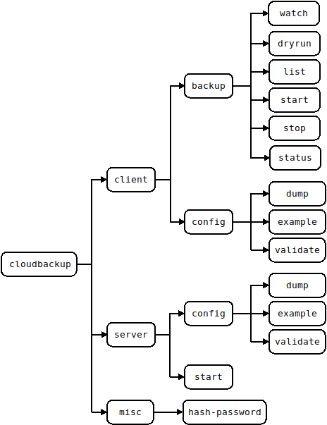
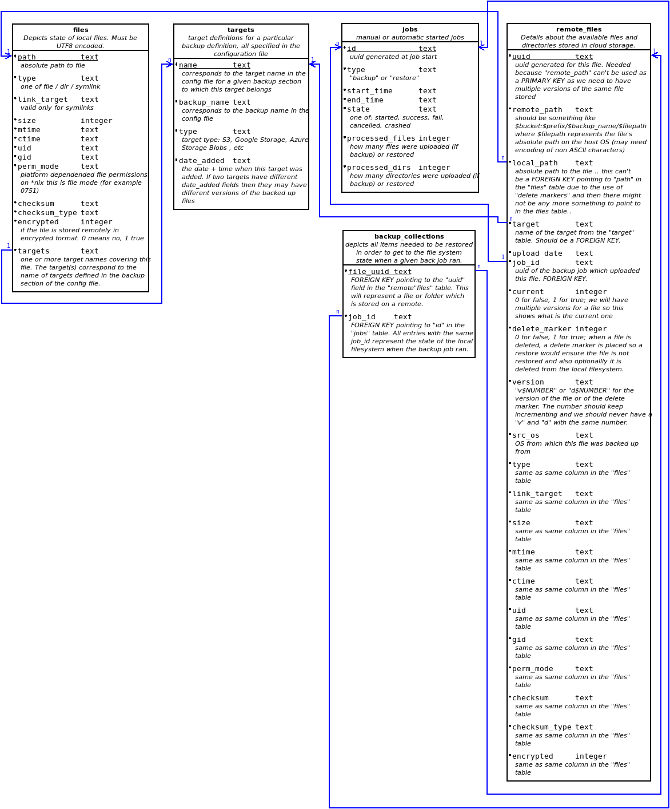

Overview
There is only one binary which can be started as a server or which can be used as a CLI client. In server mode this is the actual backup engine while the CLI's purpose is only to interact with the backup engine and give it instructions.
When running in server mode it requires a configuration file and also a set of static web assets which it uses for serving documentation or for service the static parts of a web UI.
Backup/Restore jobs: - for a given backup name only one backup job can run at a time. This MUST not be changed as things in the code are done assuming this is true. For example the SQL db should not be opened in write mode by more than 1 "thing" (SQLITE limitation) - the above stands true for restore jobs too .. no more than one at a time for a given backup name - The 1 write "thing" DB limitation implies that a restore job CAN'T run at the same time a backup job runs for a given backup name (each backup name has a dedicated db file; a restore writes in the same db file). The reverse stands true too, a backup should never run if a restore for the same DB name is running
Command Stucture
The command and its main options are depicted below. Command line parameters are supported and can be discovered using the --help option. For example:
$ cloudbackup client backup dryrun --help
Usage:
cloudbackup [OPTIONS] client backup dryrun [dryrun-OPTIONS] job_name
Help Options:
-h, --help Show this help message
[dryrun command options]
-c, --configfile= Client configuration file expected to be in YAML format and have .yml or .yaml extension. If unspecified then the default is to attempt to use $HOME/.cloudbackup.yaml on Linux or Unixes and %HomeDrive%%HomePath% on Microsoft Windows
-u, --username= Username to use when connecting to the server. If not specified then an attempt will be made to use environment variable CLOUDBACKUP_CLIENT_USERNAME followed by an attempt to use the command line specified configuration file (if not specified then
a configuration file will be searched at the default location)
-p, --password= Password to use when connecting to the server. If not specified then an attempt will be made to use environment variable CLOUDBACKUP_CLIENT_PASSWORD followed by an attempt to use the command line specified configuration file (if not specified then
a configuration file will be searched at the default location)
-a, --address= Address to use when connecting to the server. The format expect is one of 'https://1.2.3.4:8443' or 'http://127.0.0.1:8080'. If not specified then an attempt will be made to use environment variable CLOUDBACKUP_CLIENT_ADDRESS followed by an
attempt to use the command line specified configuration file (if not specified then a configuration file will be searched at the default location)
-d, --debug Set logging to debug. WARNING! Secrets and passwords will be shown when using log level debug
--jsonlog Set logging to JSON. Defaults to plaintext
--json If the operation is successful then print JSON responses as they are received from server. If this option is not specified then the response is processed and the output is a plaintext table followed by a summary at the end.
[dryrun command arguments]
job_name: Name of the backup job to dry run. This needs to match a backup job as defined in the configuration of the server

Server Components
When running in daemon mode, there are several important GO routines (called components from here one).
- daemon:
- started by the CLI when starting up the server part of the software
- in charge of starting the
httpd serverandschedulercomponents. It uses separate channels to communicate with each of those. - once the above are started it keeps running and listening for any signals being sent (for example SIGTERM) and reacts to them. On *nix platforms it also listens for SIGUSR1 and dumps some stats to stdout when it is received. It also listens for "events"
- if it receives a "configuration change" event from the
httpd serverthen notifies theschedulerthat it needs to reload it's configuration - if a "exit/shutdown" type signal is received then it sends messages to the
httpd serverandschedulernotifying them to exit and once they do it terminates the run of the server program.
- httpd server:
- provides the REST API and that is the only way of controlling the software.
- serves static files containing the documentation
- when a configuration change (config file change) is requested and performed then it informs the
daemonwhich in turn will notify other components - uses a struct to keep the configuration data and both the
daemonandschedulerroutines have pointers to this struct (and need to use locking)
- scheduler (starts / stops backup and restore jobs):
- receives manual commands (backup start / stop ; restore start / stop) via the
http server - receives "scheduled" job commands from the
croncomponent - starts the
croncomponent and when it receives a "shutdown/exit" or "configuration reload" it notifies thecroncomponent
- receives manual commands (backup start / stop ; restore start / stop) via the
- cron:
- requests backup jobs to be started based on the schedule mentioned in the configuration file
Database
There will be one database for each backup section of the config file. The structure of such a database is:

Tables
files
For each local file and directory belonging under a backed up path there will be an entry in the files table.
Entries are inserted / updated / deleted during a backup job run. The only exception to this is a manual "purge" job before a backup section of the config file is deleted/updated or worst case scenario after this has happened (this is not desirable).
targets
Records 1 to 1 mapping of the targets mentioned in the configuration file for a given backup job definition.
Entries in this table are added only when a backup job starts (basically it is checked that for each config target entry we have an entry in the table).
Before removing a target during configuration file update a manual "purge" job should be run (or worst case scenario afterwards). Ideall we block config file changes via the API if the purge was not ran.
remote_files
The remote_files table contains a listing of all remote stored copies of the files (basically the backups). A file from the files table can have multiple entries in the remote_files table due to multiple versions of said file being backed up.
There is one case where entries in the remote_files tables won't have any more a corresponding entry in the files table and that is when the local file got deleted.